地政学
プノンペンは王宮、政府、外交機関が集まる首都で、メコン流域とASEANを結ぶ政策の場です。中国、ベトナム、タイとの関係や開発資金も街に現れます。川沿いの再開発と国家儀礼が同じ都心で動き、水辺は政治の顔でもあります。
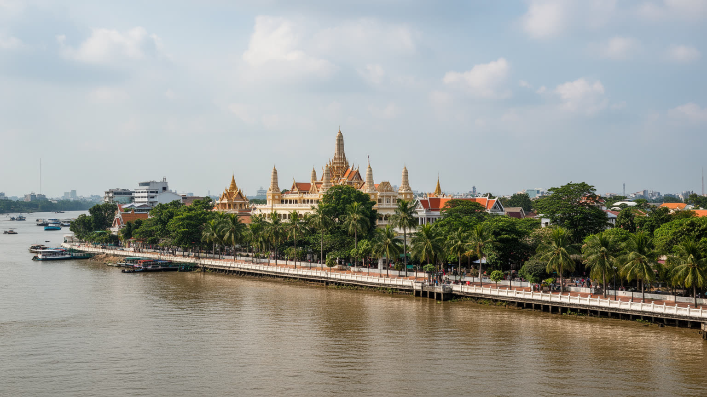
🇰🇭 カンボジア / アジア / World City Atlas
メコン川、トンレサップ川、バサック川が交わる首都。王宮、仏教寺院、縫製工場、外資系開発、虐殺の記憶、川岸の市場と屋台が近い距離で重なる都市です。
都市の骨格
プノンペンは王宮と官庁、川岸の市場、縫製工場、郊外住宅、建設現場が近接する都市です。水辺の景観は観光だけでなく、洪水、物流、移動、土地開発、日々の涼み方まで左右します。
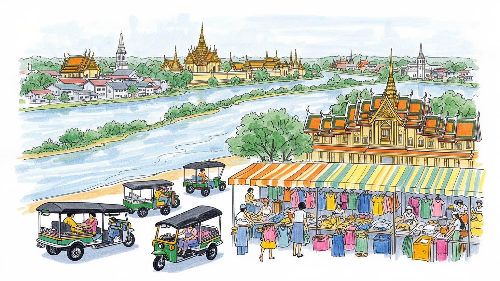
プノンペンは王宮、政府、外交機関が集まる首都で、メコン流域とASEANを結ぶ政策の場です。中国、ベトナム、タイとの関係や開発資金も街に現れます。川沿いの再開発と国家儀礼が同じ都心で動き、水辺は政治の顔でもあります。
縫製、建設、観光、行政、物流、金融が雇用を作ります。工場労働者、屋台商人、配車運転手、ホテル従業員、建設労働者が成長を支えます。賃金、寮、通勤、労働安全、家賃は若い世代の生活を左右します。今も重要です。
上座部仏教、王室儀礼、祖先への祈り、僧院教育が生活の節目を支えます。クメール語、舞踊、食、祭礼、川辺の夕涼みは首都の文化を作ります。虐殺の記憶も博物館や慰霊の場に残り、日常の中で静かに語られます。
王宮、シルバーパゴダ、川岸、中央市場、トゥールスレンを訪ねる観光の横で、住民は屋台、学校送迎、工場通勤、家族の送金、洪水、暑熱、交通渋滞と向き合います。成功は、住民が水辺と市場を使えるかで決まります。
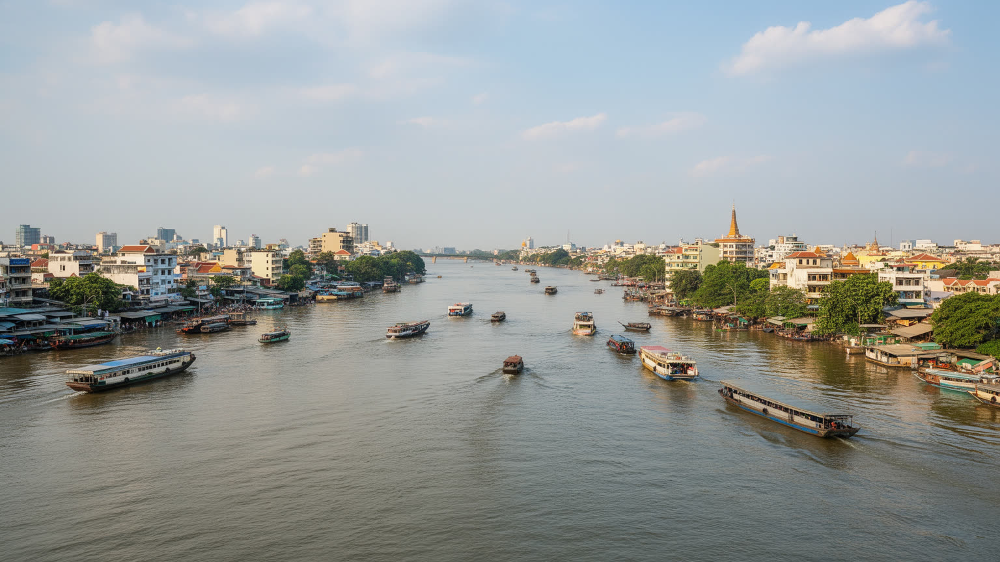
プノンペンの都市は、メコン川、トンレサップ川、バサック川が出会う低地に築かれています。川は美しい眺めである前に、漁業、交易、祭礼、洪水、排水、土地価格を決める都市の骨格です。王宮と川岸の遊歩道は首都の顔を作り、背後の市場、ホテル、官庁、住宅地、工場地区へ人と物が流れます。雨季には水位が上がり、排水が遅れる地区では道路が生活の不安定さを見せます。乾季には川辺が涼み、散歩、屋台、観光船、家族の時間を受け止めます。都市の拡大は郊外の湿地や水路を埋め、住宅開発と洪水リスクを同時に増やします。プノンペンを読むには、中心部の景観だけでなく、運河、排水路、橋、堤防、周辺農地の変化を同じ地図に置く必要があります。三つの川が交わる位置は、首都の象徴であり、暮らしの危うさでもあります。水の流れを無視した開発は、低所得地区ほど強い負担を生みます。川と都市の関係を見れば、成長の速度と生活の安全がどこで衝突しているかが分かります。さらにトンレサップの水位変化は、地方の漁村や農村と首都を結び、食料価格や季節の移動にも影響します。川岸の高級開発と背後の排水不良を並べて見ると、同じ水辺が富の象徴にも不安の原因にもなることが分かります。水を制御する技術と、水と暮らす知恵の両方が必要な都市です。川は都市の記憶も運びます。
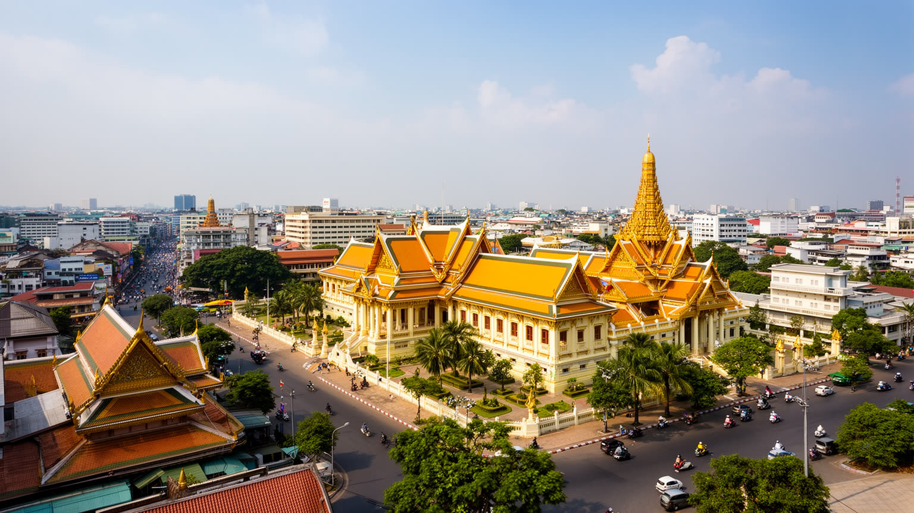
プノンペンはカンボジアの首都として、王宮、政府機関、国会、各国大使館、国際援助機関が近い距離に集まります。王室の儀礼と行政の決定は、観光客の写真に収まる建築だけでなく、警備、交通規制、学校行事、祝日、報道として街に現れます。国内政治は地方の農村、縫製工場、土地開発、労働運動、若者の雇用と結びつき、首都の決定は全国の生活に届きます。外からは小さな首都に見えても、メコン流域、中国や日本、韓国、ASEAN諸国、欧米の援助と投資が交差する交渉の場です。道路、橋、空港、特区、河岸再開発には国際関係が刻まれます。プノンペンの政治を読むには、王宮の静かな姿と、土地をめぐる抗議、工場労働者の要求、都市開発の許認可を同時に見る必要があります。国家の威信は水辺の景観に表れますが、政治の実感は家賃、通勤、賃金、立ち退き、公共サービスとして住民に届きます。首都は権力の舞台であり、生活条件をめぐる交渉の場でもあります。地方から首都へ集まる学生、公務員志望者、商人、労働者は、国家の制度に直接触れる一方、都市の不平等も経験します。式典の整った空間と、周辺の未舗装道路や小商いの路地を合わせて見ることで、首都が持つ秩序と脆さが見えてきます。政治の距離が近い都市では、道路の整備、警備の範囲、公共施設の場所も権力の配置として読めます。首都の中心を歩くことは、制度が生活へ触れる境目を歩くことでもあります。
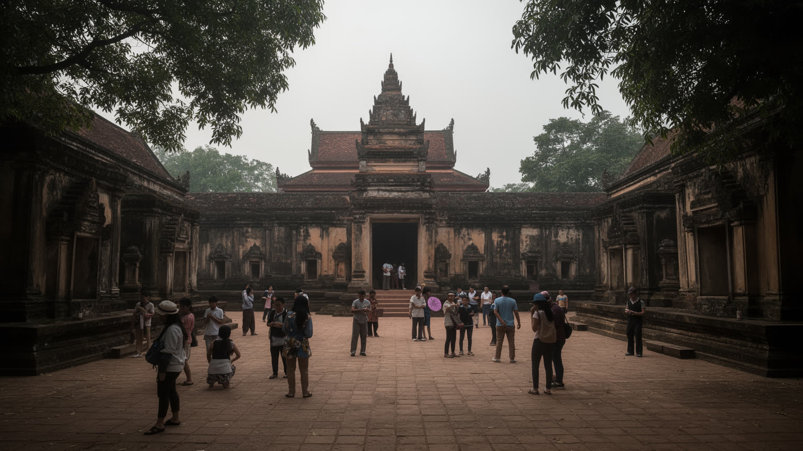
プノンペンを理解するうえで、クメール・ルージュ期の暴力と虐殺の記憶は避けられません。トゥールスレン虐殺博物館や郊外のチュンエクは、観光名所というより、家族史、国家の傷、教育、司法、沈黙の重さを考える場所です。都市の日常は屋台や学校、工場、建設現場の活気に満ちていますが、その足元には失われた人びとの不在があります。記憶は記念施設だけでなく、家族が語らない話、世代間の距離、政治への慎重さ、僧院での祈り、学校教育の中に残ります。外から訪れる人は、悲劇を短時間で消費するのではなく、現在の生活が過去を背負いながら立ち上がっていることを見なければなりません。プノンペンの復興は、建物や道路の再建だけではなく、信頼、教育、法、共同体を少しずつ戻す過程でもありました。記憶を扱う場所では、犠牲者への敬意と、現在を生きる住民の尊厳を同時に保つ必要があります。この都市の明るさは、忘却ではなく、生き延びた人と次世代が生活を続ける力から生まれています。若い世代にとって、過去は教科書や博物館で学ぶ歴史であると同時に、祖父母や近所の沈黙として残る身近な記憶です。都市が国際観光地になるほど、慰霊の場所を静かに扱い、悲劇を消費物にしない態度が求められます。記憶の継承は、カンボジアの未来を支える公共性でもあります。沈黙にも意味があります。
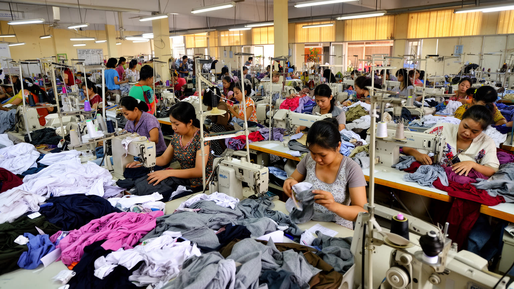
プノンペン周辺の縫製産業は、カンボジア経済と世界の衣料品市場を結ぶ重要な回路です。工場では地方から来た若い女性を含む多くの労働者が働き、賃金を家族へ送り、弟妹の教育や親の生活を支えます。輸出向けの衣料は遠い国の店頭に並びますが、その背後には通勤トラック、寮、食堂、残業、労働安全、最低賃金交渉があります。首都の成長は、金融や不動産だけでなく、こうした反復的な現場労働に支えられています。工場の近くには屋台、修理屋、安い賃貸、送金サービスが集まり、労働者の生活圏を作ります。一方で、物価や家賃が上がると賃金の価値は薄れ、病気や出産、失業が家計を直撃します。プノンペンの産業を読むには、都心の建設クレーンだけでなく、郊外の工場門、朝の移動、休憩時間の食事、労働組合の要求を見なければなりません。世界市場の価格競争は、縫う人の時間と身体に転嫁されやすいからです。都市の発展を評価する基準は、輸出額だけでなく、働く人が安全に住み、学び、次の技能へ進めるかにあります。さらに縫製労働は、農村の世帯経済とも深く結びます。都市で働く一人の賃金が、村の医療費、学費、借金返済を支えることがあります。だから労働条件の変化は工場の中だけでなく、地方の暮らしにも波及します。首都の産業を見る視線は、国境を越える商品と、家族を支える送金の両方に向ける必要があります。
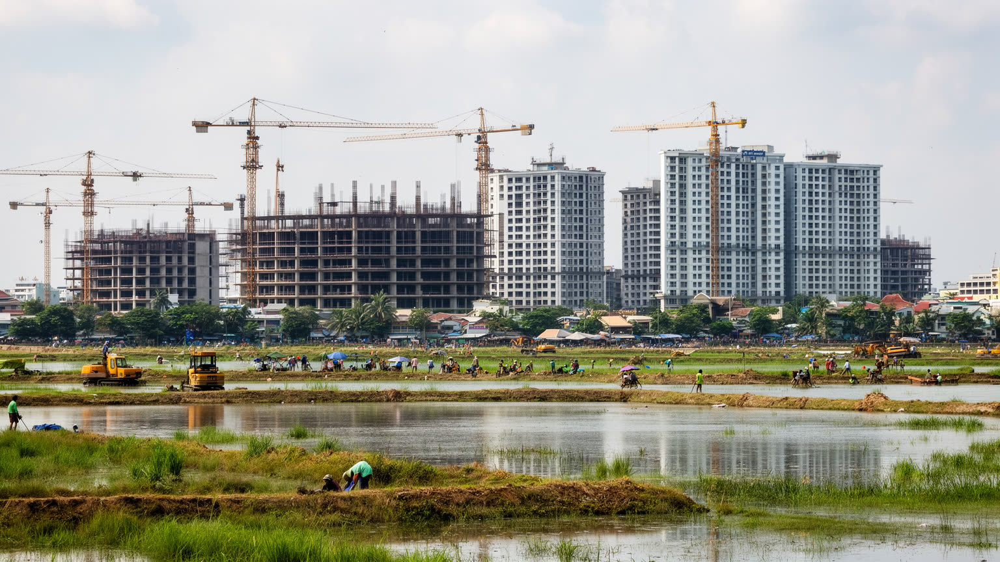
近年のプノンペンでは、高層住宅、商業施設、ホテル、道路、橋が急速に増え、都市の輪郭が大きく変わっています。投資は雇用と新しい住まいを生みますが、湖や湿地の埋立、排水能力の低下、立ち退き、補償、家賃上昇をめぐる問題も生みます。建設現場は都市の未来を示すと同時に、誰の土地が価値を持ち、誰が周辺へ押し出されるのかを見せる場所です。中心部に新しいコンドミニアムが建つ一方、労働者や低所得世帯は郊外へ移り、通勤費と時間の負担を増やします。建設業そのものも多くの労働者に依存し、安全管理、賃金、日雇いの不安定さが課題になります。都市が豊かになるほど、古い市場や路地、低層住宅、共同体の場所は開発圧力にさらされます。プノンペンを読むには、新しいビルの高さだけでなく、水が逃げる場所、住民が移る先、補償の仕組み、建設労働者の暮らしまで見る必要があります。土地は投資商品である前に、生活、記憶、排水、移動を支える基盤です。成長が都市全体の安全を高めるか、短期利益のために水と住民を追い詰めるかが問われています。建物の完成後も、管理費、空室、外国資本の動き、周辺道路の混雑は住民に影響します。都市の近代化が本当に公共の利益になるには、排水、学校、公園、公共交通、手頃な住宅が同時に整わなければなりません。建設の速度だけでは、都市の成熟は測れません。
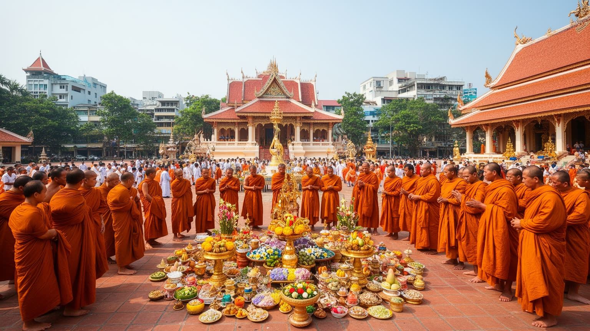
プノンペンの信仰生活は、上座部仏教、王室儀礼、祖先への祈り、僧院教育、日々の供え物によって形作られています。寺院は観光地である前に、葬送、祝福、相談、教育、寄進、地域の集まりを支える場所です。僧侶の托鉢や読経、祝日の行列、水祭りの賑わい、家族の命日に行う供養は、都市の時間を区切ります。王宮周辺の儀礼は国家の象徴ですが、信仰はもっと小さな単位で生活に入り込みます。市場の店先、家の祭壇、トゥクトゥクの飾り、受験や商売の祈願にも、人びとの不安と希望が表れます。虐殺の記憶を悼む場でも、仏教的な供養は重要な役割を持ちます。近代化や外資系開発が進んでも、寺院は都市の中で人が立ち止まり、家族や過去と向き合う場所であり続けます。プノンペンの宗教を読むことは、建築の美しさを見るだけでなく、誰が寄進し、誰が食事を配り、誰が若者を教え、誰が死者を記憶するのかを見ることです。信仰は制度ではなく、都市生活を結び直す日常の実践として働いています。僧院は地方出身の若者が学ぶ場にもなり、都市への入口として機能することがあります。祭礼の日には交通や商売の流れが変わり、家族や近所の関係が再確認されます。宗教は過去の形式ではなく、急成長の中で人が支えを探す現在の仕組みです。都市が不安定に変わるほど、寺院は相談、記憶、教育、施しをつなぐ公共空間になります。
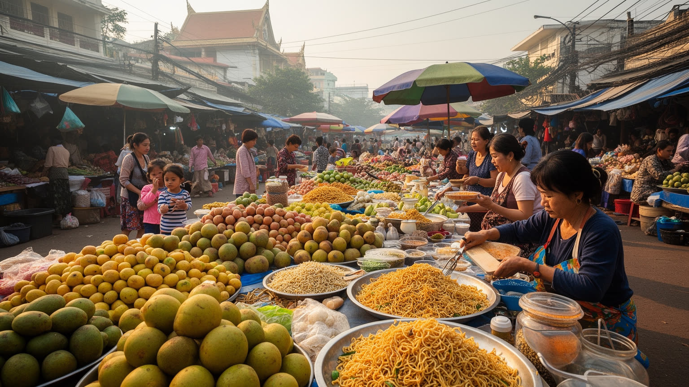
プノンペンの日常は、市場と屋台のリズムに強く支えられています。中央市場やロシアンマーケットのような大きな市場だけでなく、住宅地の朝市、学校前の軽食、工場近くの食堂、川辺の屋台が、住民の時間割を作ります。米、魚、野菜、発酵調味料、麺、焼き物、果物、コーヒーは、家族の食卓と働く人の短い休息を結びます。観光客にとって市場は色彩豊かな場所ですが、住民にとっては価格交渉、仕入れ、現金収入、近所の情報交換の場です。屋台は非公式な経済でありながら、都市の安い食と雇用を支えます。一方で、再開発、衛生規制、道路管理、家賃上昇は小商いを圧迫します。清潔で歩きやすい都市を作ることは大切ですが、路上の商いを単に排除すれば、低所得者の食と仕事が失われます。プノンペンの食文化を読むには、名物料理だけでなく、朝の仕込み、氷や水の供給、皿洗い、配達、家族経営の負担を見る必要があります。市場は古い風景ではなく、都市の生活費と雇用を調整する実用的なインフラです。そこに首都の活力と不安定さが同時に現れます。食の価格は賃金や燃料費、川と農村の収穫にも左右されます。市場を歩くと、都市と地方の関係が食材の量や値段として見えてきます。観光客向けの演出が増えても、住民が毎日買える店を残すことが、都市文化を守る条件になります。味は生活の記録です。
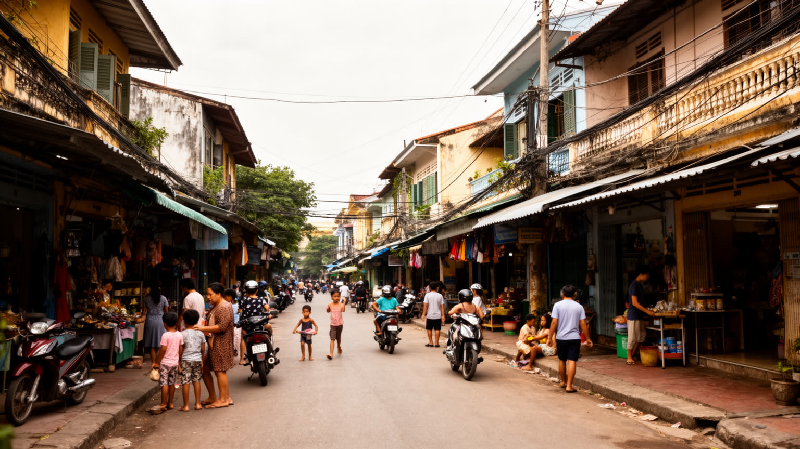
プノンペンの暮らしは、川岸の古い低層住宅、ショップハウス、集合住宅、新しいコンドミニアム、郊外の分譲地、工場近くの賃貸部屋が同時に存在することで成り立ちます。家族で店を営む人、地方から来た工場労働者、配車運転手、学生、公務員、外国人駐在員は、同じ都市にいても住む場所と時間の使い方が大きく違います。中心部は仕事と学校、病院、寺院、市場に近い一方、家賃が上がり、古い住民や若い労働者は郊外へ移りやすくなります。郊外住宅は新しい生活の希望を示しますが、通勤、渋滞、排水、公共交通、学校の不足が負担になります。多くの世帯では地方の家族への送金や親族の支援が重要で、都市生活は個人だけで完結しません。暑熱、雨季の浸水、停電、道路の未整備も、住まいの質を左右します。プノンペンの住宅を読むには、建物の新旧だけでなく、誰が台所を使い、誰が送金し、誰が子どもを送迎し、誰が洪水時に身を守れるかを見る必要があります。住まいは都市成長の成果であると同時に、格差と安全が最も具体的に現れる場所です。都市で働く若者の多くは、将来の独立、結婚、親への支援を同時に考えながら家賃を払います。部屋の広さだけでなく、職場までの距離、水道、排水、近所の助け合いが生活を左右します。住宅問題は不動産市場ではなく、家族の将来設計そのものです。
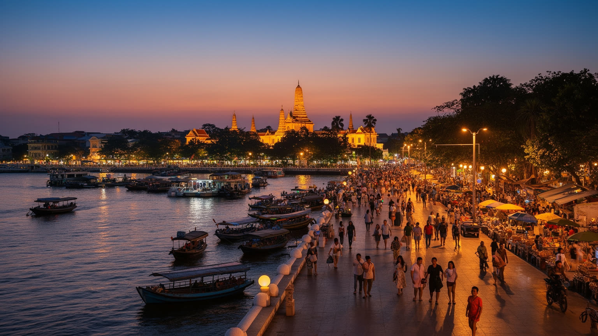
プノンペン観光は、王宮、シルバーパゴダ、ワット・プノン、中央市場、川岸の散策、トゥールスレン、チュンエクを組み合わせて都市を理解する入口になります。華やかな王室建築と、虐殺の記憶を伝える施設が同じ旅程に入るため、訪問者は美しさと痛みを切り離せません。川辺のホテル、カフェ、ナイトマーケットは気軽な楽しみを与えますが、その周囲では住民が通勤し、商いをし、家族と夕涼みをしています。観光が増えると、収入と雇用が生まれる一方、地価上昇、短期滞在向けの店の増加、記憶の消費、交通混雑も起きます。プノンペンの遺産は、アンコール遺跡の玄関口としてだけではなく、近現代のカンボジアを読む場所として重要です。観光客は王宮の写真だけでなく、僧院、学校、市場、慰霊の場所、川の水位、工場へ向かう人の流れにも目を向ける必要があります。観光の価値は、訪れる人が学ぶことと、住民が生活の場所を失わないことの両方で測られます。軽い消費と深い記憶が隣り合う点に、この首都の難しさと重要性があります。案内される名所の外にも、朝の市場、学校帰りの屋台、寺院の寄進、川沿いの散歩があります。そうした普通の時間を尊重できる観光でなければ、都市の魅力は表面だけになります。訪問は学びであり、住民の暮らしへの配慮でもあります。旅の倫理も問われます。
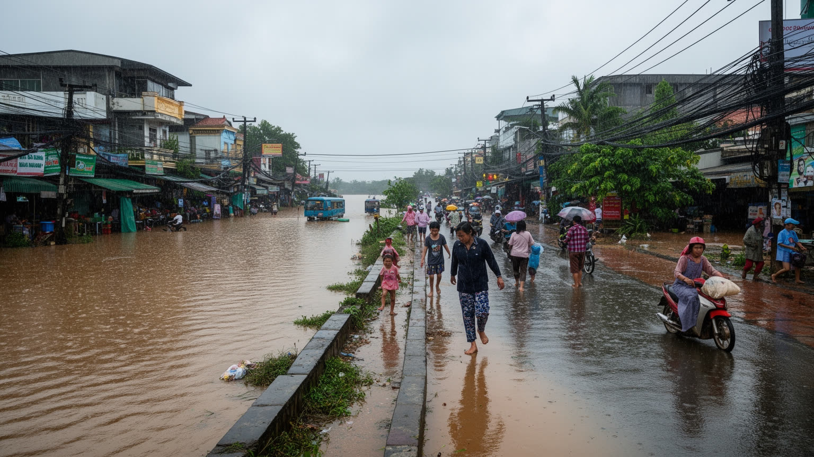
プノンペンの気候は熱帯モンスーンで、乾季の暑さと雨季の豪雨が生活のリズムを決めます。強い日差しは屋外労働者、屋台商人、配達員、通学する子ども、高齢者に大きな負担をかけます。雨季には道路が短時間で冠水し、排水路や埋め立てられた湿地の状態が住民の安全を左右します。川に近い低地では水位の変化が常に意識され、洪水は住宅、商店、学校、工場の操業に影響します。気候リスクは自然現象だけではありません。どの地区に排水設備があり、どの住宅が浸水しやすく、誰が暑い部屋で働き、誰が涼しい施設へ逃げられるかという社会問題でもあります。都市の拡大で湖や湿地が減るほど、水を受け止める余地は小さくなります。緑地、日陰、公共トイレ、涼める場所、安全な歩道、早い警報、廃棄物管理は、景観ではなく命を守る都市基盤です。プノンペンが成長を続けるためには、建設と投資だけでなく、水と熱に強い生活環境を整える必要があります。気候への備えは、貧しい地区ほど後回しにされやすいからこそ、公平性の問題として扱うべきです。学校や工場での暑熱対策、停電時の対応、冠水後の衛生管理も重要です。都市が水辺を売り物にするなら、水に弱い住民を置き去りにしない責任があります。気候対策は将来の課題ではなく、毎年の雨季と乾季をどう生きるかという現在の問題です。
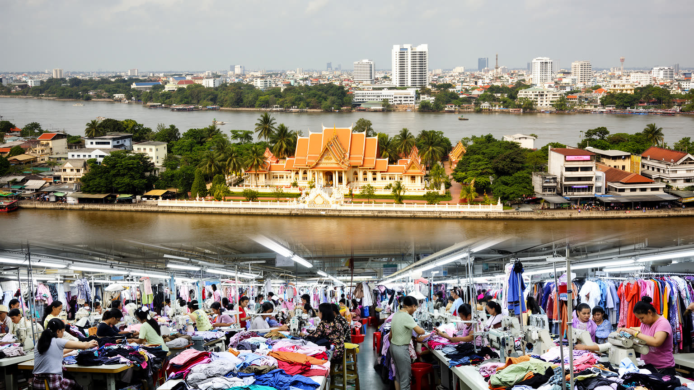
プノンペンは、世界金融の中心ではありませんが、東南アジアの現代都市を理解するうえで極めて重要な首都です。三つの川が交わる地形、王宮と政府機関、仏教寺院、虐殺の記憶、縫製工場、建設投資、市場と屋台、郊外住宅が近い距離で重なります。経済成長は若い労働者に機会を与え、道路や住宅を増やしますが、土地開発、浸水、家賃、労働安全、記憶の扱いという課題も強めます。都市の魅力は、川岸の夕景や王宮の輝きだけではありません。過去の暴力を背負いながら、家族を支える労働、祈り、市場の商い、子どもの教育、観光の受け入れを続けている点にあります。プノンペンを読むことは、成長する首都が水と記憶と生活をどう調整しているかを読むことです。近代化の速度が速いほど、誰が中心に残り、誰が郊外へ押し出され、誰が水害や暑熱を受けるのかが見えやすくなります。首都の未来は、高層ビルの数だけではなく、工場労働者、屋台商人、子ども、高齢者、記憶を守る人が安全に暮らせるかで測られるべきです。川と都市の関係を大切にし、過去を軽く扱わず、生活の基盤を整えることが、この都市の成熟につながります。プノンペンの重要性は、巨大な経済規模ではなく、復興後の社会が成長、記憶、宗教、国際投資、労働を同時に抱えている点にあります。都市を一枚の観光写真としてではなく、川の水位、工場の賃金、寺院の祈り、市場の価格、家族の送金が結びつく生活圏として読むと、カンボジアの現在が見えてきます。